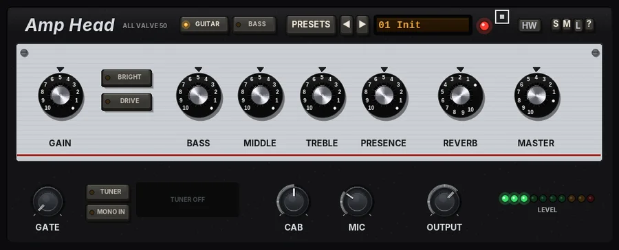
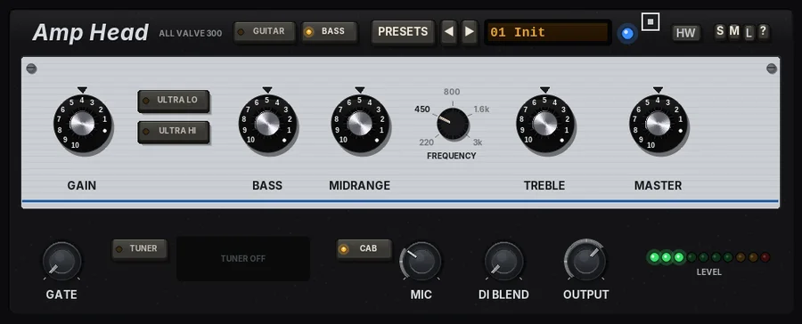

Amp Head
Two all-valve amp heads in one: a guitar head with spring reverb and a 2x12 or 4x12 cabinet, and a bass head with an 8x10 cabinet and a DI blend.

Overview
Amp Head replaces the former Guitar Head and Bass Head.
Amp Head holds two all-valve amplifier heads, and the MODEL keys choose which one is in the circuit:
- GUITAR - a guitar amp in the spirit of the classic 50-watt heads: a clean and a DRIVE channel, a tone stack, a spring reverb, a push-pull power stage and a 2x12 or 4x12 cabinet, in true stereo.
- BASS - a bass amp in the spirit of the classic 300-watt heads: a valve preamp, a tone stack with a five-position midrange, a push-pull power stage, an 8x10 cabinet and a clean DI blend.
Each model is the former plug-in, sample for sample: with the same settings Amp Head sounds exactly like Guitar Head or Bass Head did. Each keeps its own faceplate, controls and layout under a shared header with the MODEL keys and the preset display. Only the selected model runs, so it costs no more CPU than the old plug-in on its own.
Changing model crossfades over 20 ms, so it is click-free even while you play; the model you switch to starts from a clean state, and each model keeps its own settings while you use the other one.
Reach for it for
- Clean, crunch and lead guitar tones from a DI recording (GUITAR)
- Spring reverb on guitars (GUITAR)
- The weight and growl of a big bass rig on DI bass or synth bass (BASS)
- Blending amp and DI for definition and low end together (BASS)
- A head into your own cabinet plugin or impulse response (CAB off)
Controls
The header
- Name
- Amp Head; beside it, the selected model's badge (ALL VALVE 50 for GUITAR, ALL VALVE 300 for BASS).
- MODEL
- GUITAR or BASS (GUITAR by default). The lit key is the model in use. Changing model crossfades over 20 ms; the model you switch to starts from a clean state.
- PRESETS
- Opens the preset list (a click on the preset display does the same). The list ends with Reset all to defaults.
- ◄ / ►
- Step to the previous or next preset.
- Preset display
- Shows the number and name of the preset in use. New instances open on Init.
- Pilot lamp
- Shows the amp is on. It takes the theme's accent colour.
- Theme picker
- Changes the colour of the control panel, its pinstripe and the pilot lamp. Graphite (the default) keeps the aluminium panel with a red stripe and lamp on GUITAR and a blue one on BASS.
- HW
- Switches between the hardware-style head and the flat look.
- S / M / L
- Panel size: small, medium or large (Large is 1.3 times Medium). The panel also scales to fit the plugin window.
- ?
- Opens a pop-up with the design credit, the GFX website address and the address of this manual. Click anywhere to close it.
Shared settings (parameter list only)
These settings are not on the panel; you find them in REAPER's parameter list. Both models share them.
- Input trim / Input guard
- The input stage in front of the amp. TRIM is a plain level, -24 to +12 dB (0 dB by default). GUARD (off by default) eases very hot sources down towards about -18 dBFS and catches fast peaks above -6 dBFS, so a loud source does not slam the preamp.
- Drift
- The valves' bias wanders very slightly over time, so the sound is never quite static. Drift (%) scales it: 50% (the default) is the standard amount set by Drift amount (25%) and Drift speed (0.25 Hz), 100% is twice as much and a little faster, 0% switches it off.
- Output stage
- The house output stage, CLIP always on: a soft clip at the Ceiling (-0.3 dBFS by default), with no latency. Below about 2 dB under the ceiling it does nothing. Band sat (0% by default), Bias, Sat low band and Sat high band add a gentle saturation of the lows and highs before the clip.
Every control is also in the parameter list; the names start with the model they belong to (GUITAR Gain, BASS DI blend ...).
GUITAR - guitar head

Overview
An all-valve guitar amplifier in the spirit of the classic 50-watt heads. The preamp has a clean channel with one valve, from sparkly to edge-of-breakup, and a DRIVE channel that cascades a second valve for more gain. Then come a tone stack, a spring reverb tank, and a push-pull power stage that sags and crunches as you drive it.
A cabinet stage follows, with a 2x12 open-back or 4x12 closed-back cabinet and a microphone that you can move from on axis to off axis. Turn the cabinet off to use the amp as a line-out head into your own cabinet plugin or impulse response.
The amp runs in true stereo at twice the sample rate for cleaner distortion: left and right each go through their own identical amp, preamp to cabinet, with all the controls linked and one shared power supply. The two spring tanks differ slightly, so the reverb opens out into stereo; for a mono guitar, switch MONO IN on. A built-in noise gate and tuner complete the head.
Controls
The control panel
- GAIN
- The preamp gain, 0 to 10 (5 by default). On the clean channel it goes from sparkly to edge-of-breakup; with DRIVE on it goes much further.
- BRIGHT
- A treble lift in front of the gain. It is strongest at low GAIN settings and fades as you turn GAIN up, like the bright switch on a real amp.
- DRIVE
- Off: the clean channel (one valve). On: a second cascaded valve for more gain and sustain, with a tighter low end.
- BASS / MIDDLE / TREBLE
- The tone stack, 0 to 10 each; 5 is flat.
- PRESENCE
- The top end after the power stage, 0 to 10 (5 by default).
- REVERB
- The level of the spring reverb, 0 to 10 (2 by default). The spring tank sits between the preamp and the power stage.
- MASTER
- How hard the power stage is driven, 0 to 10 (4 by default): first headroom, then sag and crunch as you turn it up.
The lower strip
- GATE
- A noise gate in front of the amp, from OFF (fully down) to -20 dB. Raise it until the hiss and hum between notes disappear.
- TUNER
- Switches the tuner on. While it is on, the output is muted and the display shows the note and how far off it is; the note turns green when you are in tune. With no note it reads PLAY A NOTE.
- MONO IN
- Lit: the two inputs are summed and the same signal feeds both sides of the amp, as with one guitar into one head; the stereo spring reverb still gives width. Off (the default): stereo sources such as keyboards stay stereo.
- CAB
- The cabinet: OFF (line out, no cabinet), 2x12 OPEN (open back, the default) or 4x12 (closed back, more low end).
- MIC
- The microphone position, 0 (on axis, brighter) to 10 (off axis, darker and smoother); 3 by default.
- OUTPUT
- Output level, -24 to +12 dB.
- LEVEL
- A row of ten LEDs showing the output peak level, from -30 dB up to just under 0 dBFS.
Tips
- For edge-of-breakup, keep DRIVE off, set GAIN around 6 - 8 and let MASTER add the crunch as you dig in.
- BRIGHT is most useful at low GAIN settings, where it adds sparkle to clean tones; at high gain it does little.
- Move MIC towards 10 to smooth out a harsh, fizzy top end before reaching for TREBLE.
BASS - bass head

Overview
An all-valve bass amp in the spirit of the classic 300-watt heads, driving a sealed 8x10 cabinet. The preamp valve is clean and round when GAIN is low and starts to growl as you turn it up. The tone stack has bass and treble shelves, a midrange control with five frequencies, and two voicing switches: ULTRA LO for a deep low end with scooped mids, and ULTRA HI for extra top.
MASTER sets how hard the push-pull power stage works. Low settings give clean headroom; higher settings bring in the sag of the power supply, compression and the output transformer's saturation - the big-amp feel when you dig in. After the amp, the cabinet can be switched out for a line-out sound, and a clean DI signal can be blended in underneath, as engineers often do with a real bass rig.
The amp works in mono, as a real amp does: the two inputs are added together, and both outputs carry the amp. It runs at twice the sample rate inside to keep the distortion clean.
Controls
The control panel
BASS, MIDRANGE and TREBLE move in 0.5 dB steps; hold Shift to move them freely. Double-click a knob to reset it.
- GAIN
- The preamp valve, 0 to 10 (4 by default). Low settings are clean and round; as you turn it up the valve starts to growl and distort.
- ULTRA LO
- A deep low-end lift (about +4 dB around 40 Hz) together with a scooped midrange (about -10 dB around 500 Hz). The classic big, hollow modern bass sound.
- ULTRA HI
- A bright top-end lift, about +8 dB from 8 kHz up. Adds click and string noise.
- BASS
- A low shelf at 80 Hz, -12 to +12 dB.
- MIDRANGE
- Boost or cut at the FREQUENCY set beside it, -12 to +12 dB. Boost for a bass that cuts through a busy mix; cut for a smoother, deeper tone.
- FREQUENCY
- Where MIDRANGE works: 220 Hz, 450 Hz, 800 Hz, 1.6 kHz or 3 kHz (450 Hz by default). Click a value to choose it, or click / drag / use the mouse wheel on the knob to step through. In the flat look this knob is called FREQ.
- TREBLE
- A high shelf at 5 kHz, -12 to +12 dB.
- MASTER
- How hard the push-pull power stage is driven, 0 to 10 (4 by default). Low settings stay clean with plenty of headroom; higher settings add the sag of the power supply, compression and the output transformer's saturation.
The lower strip
- GATE
- A noise gate before the amp, from OFF (fully down, -80 dB) up to -20 dB. Raise it until the hum and buzz between notes disappear but the notes still ring out.
- TUNER
- Switches the tuner on. While it is on the output is muted, so you can tune silently. It reads notes from about 35 to 700 Hz. The display shows the note and octave, with a dot that moves left (flat) or right (sharp); the note turns green when you are within 4 cents. It reads PLAY A NOTE until it hears a clear pitch, and TUNER OFF when switched off.
- CAB
- The 8x10 cabinet in or out (in by default). Out gives the amp's line-out sound, for use with a cabinet simulator of your own.
- MIC
- The microphone on the cabinet, 0 to 10 (3 by default): from on axis (brighter, with more of the cone's bite) to off axis (darker and softer). Only heard with CAB in.
- DI BLEND
- Mixes the clean DI signal in under the amp, 0 to 100%. 0% is amp only; 100% is the clean DI only. The DI keeps a solid, clear low end while the amp provides the growl.
- OUTPUT
- The final level, -24 to +12 dB.
- LEVEL
- Ten lights showing the output level, green up to amber and red at the top.
Tips
- For a classic clean bass, keep GAIN around 3-4 and MASTER low, and shape the tone with BASS and MIDRANGE at 800 Hz.
- For growl that still sits under the mix, push GAIN and MASTER, then bring in 20-40% DI BLEND to keep the low end solid.
- If the bass disappears on small speakers, boost MIDRANGE at 800 Hz or 1.6 kHz rather than adding more BASS.
- Set GATE only as high as you need - too high and it will cut off the tail of long notes.
Presets
Choosing a preset also selects its model. A preset for the model in use changes without a click: the output ducks out for a moment, the new settings come in at silence and it fades back in. A preset for the other model crossfades, as a MODEL change does. The factory presets set the model's own controls only (MONO IN and the shared settings stay as they are) and are level-matched with OUTPUT, so you can compare them at the same loudness.
- Init
- GUITAR at its default settings: the state a new instance opens in.
- GUITAR: Clean Jazz
- Low gain, warm and round with the treble down and a touch of spring; for jazz chords and lines.
- GUITAR: Sparkle Clean
- Bright and glassy with BRIGHT on and more spring; for clean arpeggios and chords.
- GUITAR: Edge of Breakup
- Clean channel pushed so it stays clean when you play softly and breaks up when you dig in.
- GUITAR: Classic Crunch
- DRIVE channel at moderate gain with a mid push into the 4x12; classic rock rhythm.
- GUITAR: Rhythm Crunch 4x12
- A tighter, heavier crunch with more low end and little reverb, for driving rhythm parts.
- GUITAR: Hot Lead
- High gain with the mids forward and some spring, for solos that sing and cut through.
- GUITAR: Saturated Lead
- Gain all the way up and the power stage pushed: thick, sustaining lead with the mic moved off axis to smooth it.
- GUITAR: Blues
- Clean channel and power stage both pushed for a touch-sensitive, gritty blues tone through the 2x12.
- GUITAR: Spring Surf
- Bright, low-gain clean drenched in spring reverb, for surf and twang.
- GUITAR: Ambient Clean
- Soft, smooth clean with plenty of spring, for swells and ambient parts.
- BASS: Init
- BASS at its default settings.
- BASS: DI Clean
- Low gain, line out (no cabinet) with 60% DI: a clean, full-range bass for any style.
- BASS: Warm Valve
- The valve preamp and power stage just working, with a little more low end and a softer top.
- BASS: Vintage Round
- A round, dark, thumpy tone with the treble cut and the mic off axis, in the style of old-school soul records.
- BASS: Growl
- Gain up with a mid boost at 800 Hz and 25% DI, for a bass that growls and cuts through the mix.
- BASS: Pick Rock
- Midrange at 1.6 kHz and ULTRA HI for a bright, punchy picked rock bass.
- BASS: Fat Dub
- ULTRA LO, lots of BASS and the top end rolled right off: deep, round dub and reggae weight.
- BASS: Bright Slap
- ULTRA LO and ULTRA HI with scooped mids and 35% DI, for slap and pop.
- BASS: Overdriven
- Gain and master high for a dirty, overdriven bass, with 30% DI to keep the low end solid.
- Reset all to defaults
- (Last in the list.) Every control of both models, the MODEL (back to GUITAR) and the shared settings to their starting values.
Tips
- Each model remembers its own settings while you use the other one, so you can set up a guitar sound and a bass sound and switch between them.
- Set CAB to OFF when you want to use your own cabinet plugin or impulse response after the head.
- Use TUNER between takes; remember it mutes the output while it is on.
File: gfx-amp-head.jsfx